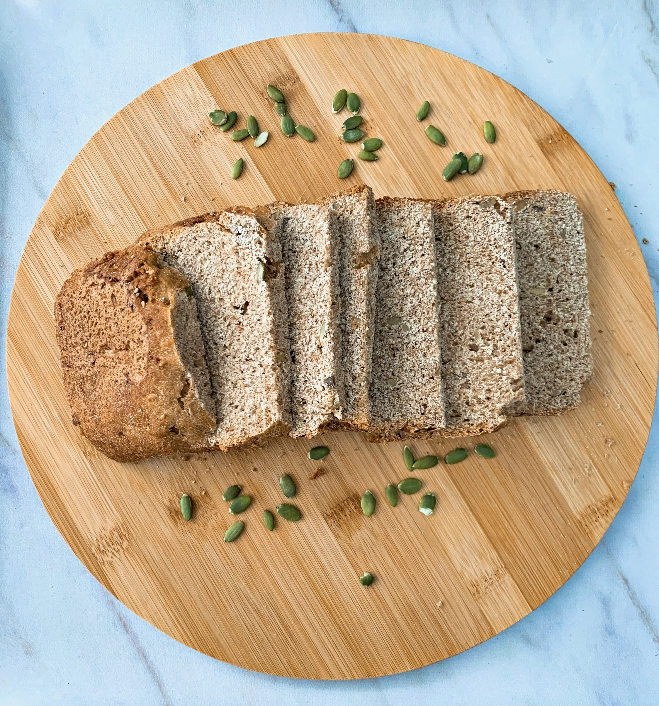
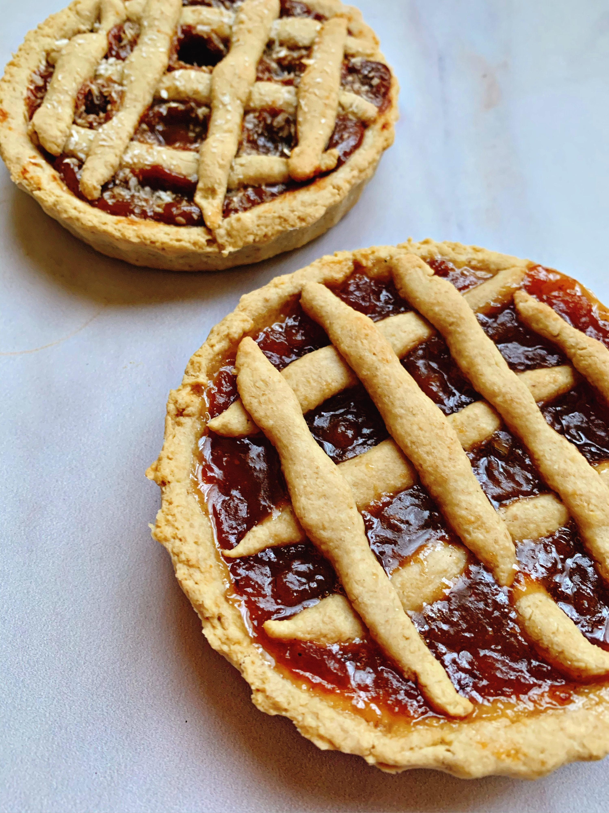

PANQUEQUES

Para esta receta lo único que vas a necesitar es:
- 1 banana
- 2 huevos (o sustituto)
- 1 y 1/2 taza de avena instantánea
- 1/2 taza de leche a elección
- Extracto de vainilla
- Polvo para hornear
Mezclar bien o licuar todos los ingredientes. Calentar una sartén e ir volcando la preparación de a poco (según el tamaño deseado de los panqueques). Cocinar vuelta y vuelta. Son ideales para acompañar con algún untable de maní o miel y fruta fresca. Esta opción es muy buena para incorporar fibra y aportar saciedad.
PAN INTEGRAL
Ingredientes:
- 250 g de harina 000
- 250 g de harina integral
- 5 g de levadura en polvo
- 250 ml de agua tibia
- 1 cda de azúcar
- 50 ml de aceite de oliva
- Sal a gusto
Para el fermento: diluir la levadura en polvo en 100 ml de agua tibia y 1 cda de azúcar. Integrar y dejar reposar tapado hasta que se forme una espuma o burbujas. Para la masa: mezclar las harinas y formar una corona. Agregar la sal por fuera sin que toque la levadura y agregar en el centro el resto del agua tibia, aceite y fermento. Formar una masa y amasar por 10 minutos aprox. Dejar descansar en un bowl tapado hasta que duplique su volumen. Luego desgasificar la masa y estirar formando un rectángulo. Enrrollar y colocar en un molde. Dejar nuevamente descansar hasta que duplique volumen y luego cocinar en horno precalentado a 180 grados por 35-40 min aproximandamente.
BUDIN DE AVENA

Ingredientes:
- 1 banana
- 2 huevos (o sustituto)
- 3/4 taza de avena instantánea
- Endulzante a gusto
- Extracto de vainilla
- Polvo para hornear
- Chips de chocolate (opcional)
Colocar todos los ingredientes en una licuadora (menos los chips) y licuar. Luego añadir los chips y volcar en un molde y cocinar en horno a 180 grados, por 15-20 minutos
TARTITA INTEGRAL DE AVENA
Ingredientes:
- 2 tazas de harina de avena o integral
- 2 huevos
- 1 cda sopera de stevia
- 6 cdas de bebida vegetal
- 1 cdita de esencial de vainilla
- 1 cda de ralladura de limón
- 3 cdas de aceite de coco
- Polvo para hornear
- Dulce a elección
Colocar en un bowl los huevos y batir com un tenedor. Agregar las cdas de bebida vegetal, la esencia de vainilla, la cda de stevia, la ralladura de limón y las cdas de aceite. Luego agregar la harina y mezclar hasta formar una masa moldeable. Forrar molde a elección y rellenar con dulce seleccionado. Resercar parte de la masa para las tiras. Hornear a 200 grados por 20-25 min.